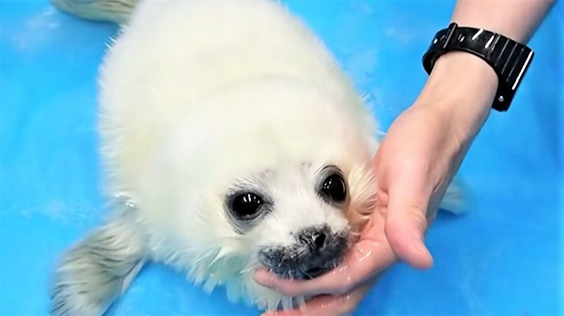

アザラシ
食肉目鰭脚類アザラシ科
北極圏から南極圏、さらには淡水湖など、幅広い環境に適応して生息している。
流線形の体やヒレ状の四肢が特徴で、さらに水中の視力に優れ、体を断熱する皮下脂肪の厚さで寒さから身を守る。
出産や子育てのため、陸や氷上に上がる。
食肉目鰭脚類アザラシ科
北極圏から南極圏、さらには淡水湖など、幅広い環境に適応して生息している。
流線形の体やヒレ状の四肢が特徴で、さらに水中の視力に優れ、体を断熱する皮下脂肪の厚さで寒さから身を守る。
出産や子育てのため、陸や氷上に上がる。